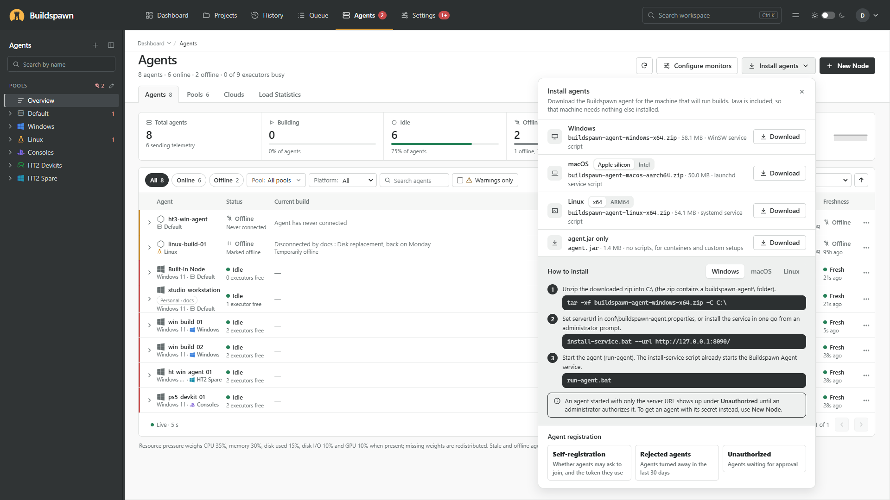
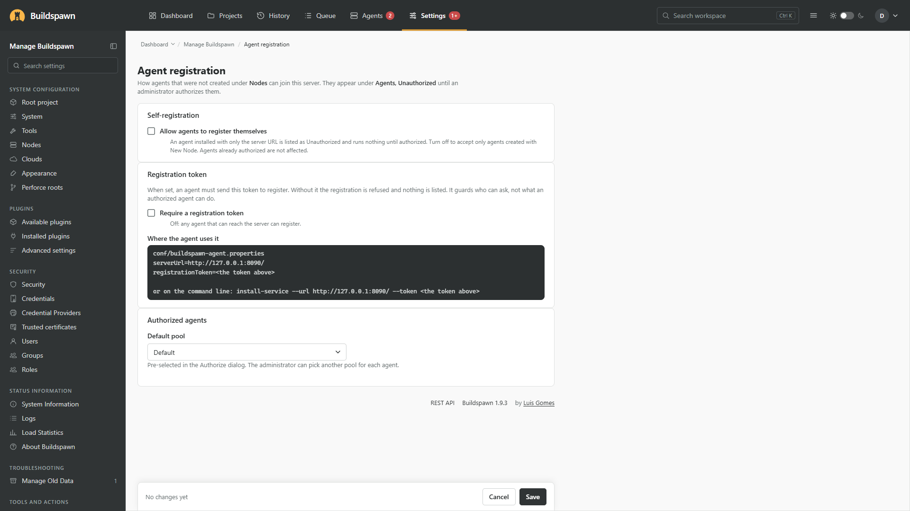

<!doctype html>
<html lang="en" data-root="../../">
<head>
<meta charset="utf-8">
<meta name="viewport" content="width=device-width, initial-scale=1">
<title>Install an agent · Buildspawn Guide</title>
<link rel="stylesheet" href="../../assets/site.css">
<script src="../../assets/search-index.js" defer></script>
<script src="../../assets/site.js" defer></script>
</head>
<body data-page="agents/install-agent">
<main class="doc">
<h1>Install an agent</h1>
<p class="lead">Add a build machine in a few minutes. The agent download includes Java, so the machine needs nothing else installed.</p>

<p>There are two ways to add an agent:</p>
<div class="cards">
  <a class="card" href="#download-the-agent"><h3>Install and register</h3><p>Download the agent, give it the server address and start it. It asks to join, and an administrator approves it.</p></a>
  <a class="card" href="#a-ready-made-zip-for-one-agent"><h3>Create it first</h3><p>Click <strong>New Node</strong>, then download a zip made for that agent. It connects with its own secret, with no approval step.</p></a>
</div>

<h2 id="download-the-agent">Download the agent</h2>
<ol class="steps">
  <li>Open <strong>Agents</strong> in the top bar.</li>
  <li>Click <strong>Install agents</strong>. A panel opens with the downloads.</li>
  <li>Find the row for the machine's system. For macOS and Linux, pick the CPU first.</li>
  <li>Click <strong>Download</strong>.</li>
</ol>
<figure class="shot">
  
  <figcaption>The Install agents panel on the Agents page.</figcaption>
</figure>
<p>There are five downloads with Java 21 inside, plus the bare agent file:</p>
<table>
  <thead><tr><th>System</th><th>CPU choice</th><th>File</th><th>Service</th></tr></thead>
  <tbody>
    <tr><td>Windows</td><td>x64</td><td><code>buildspawn-agent-windows-x64.zip</code></td><td>Windows service (WinSW)</td></tr>
    <tr><td>macOS</td><td>Apple silicon or Intel</td><td><code>buildspawn-agent-macos-aarch64.zip</code>, <code>buildspawn-agent-macos-x64.zip</code></td><td>launchd</td></tr>
    <tr><td>Linux</td><td>x64 or ARM64</td><td><code>buildspawn-agent-linux-x64.zip</code>, <code>buildspawn-agent-linux-aarch64.zip</code></td><td>systemd</td></tr>
    <tr><td>Any</td><td>none</td><td><code>agent.jar</code> only</td><td>none: for containers and custom setups. Needs Java 17 or later on the machine.</td></tr>
  </tbody>
</table>
<p>Each zip holds a <code>buildspawn-agent</code> folder with the agent, Java, start scripts, service scripts and the settings file <code>conf/buildspawn-agent.properties</code>. The scripts use the Java inside the folder first.</p>
<p>The <code>bin</code> folder holds the agent's own tools: the <a href="agent-terminal.html">terminal program</a> <code>buildspawn-agent-tui</code> on every system and, on Windows, the <a href="windows-tray-app.html">tray app</a> <code>Buildspawn Agent.exe</code>. Windows also gets <code>binuildspawn-agent-service.xml</code>, the service definition. The scripts are described in <a href="windows-service.html">Agent service scripts</a>.</p>

<h2>Install and start it</h2>
<p>The <strong>How to install</strong> part of the panel shows these steps for each system, with your server's address filled in. Pick the tab for your system.</p>

<h3>Windows</h3>
<ol class="steps">
  <li>Unzip the download into <code>C:\</code>. You get <code>C:\buildspawn-agent\</code>.
<pre><code>tar -xf buildspawn-agent-windows-x64.zip -C C:\</code></pre></li>
  <li>Open an administrator command prompt in that folder and install the service in one go:
<pre><code>install-service.bat --url http://buildserver:8080/</code></pre>
  The service is called <strong>Buildspawn Agent</strong> and starts right away and at every boot. Other options: <code>--name NAME</code> and <code>--token TOKEN</code> (see <a href="agent-connection.html">Connect an agent</a>).</li>
  <li>To run it in a window instead, set <code>serverUrl</code> in <code>conf\buildspawn-agent.properties</code> and start <code>run-agent.bat</code>.</li>
  <li>To see its status next to the clock, start <code>bin\Buildspawn Agent.exe</code> (see <a href="windows-tray-app.html">Windows tray app</a>).</li>
</ol>

<h3>macOS</h3>
<ol class="steps">
  <li>Unzip the download into your home folder:
<pre><code>unzip buildspawn-agent-macos*.zip -d ~</code></pre></li>
  <li>Register the launchd service in one go:
<pre><code>cd ~/buildspawn-agent
./install-service.sh --url http://buildserver:8080/</code></pre>
  The service starts when you log in.</li>
  <li>Or set <code>serverUrl</code> in <code>conf/buildspawn-agent.properties</code> and run <code>./run-agent.sh</code>.</li>
</ol>

<h3>Linux</h3>
<ol class="steps">
  <li>Unzip the download into <code>/opt</code>:
<pre><code>sudo unzip buildspawn-agent-linux*.zip -d /opt</code></pre></li>
  <li>Register the systemd service in one go:
<pre><code>cd /opt/buildspawn-agent
sudo ./install-service.sh --url http://buildserver:8080/</code></pre>
  systemd enables and starts the service. It runs as the user who ran <code>sudo</code>; add <code>--user build</code> to choose another account.</li>
  <li>Or set <code>serverUrl</code> in <code>conf/buildspawn-agent.properties</code> and run <code>./run-agent.sh</code>.</li>
</ol>
<div class="callout tip"><p>Replace <code>http://buildserver:8080/</code> with your server's address. The panel shows the right one for your server.</p></div>

<h2>Registration and approval</h2>
<p>When self-registration is on (see <a href="#agent-registration-settings">Agent registration settings</a> below), an agent started with only the server address asks to join. It shows up under the <strong>Unauthorized</strong> tab of the Agents page and runs nothing until an administrator approves it.</p>
<ol class="steps">
  <li>Start the agent. On the Agents page, an <strong>Unauthorized</strong> tab appears with a count. The tab is hidden while no agent is waiting.</li>
  <li>Open the tab. It lists the agents that registered themselves.</li>
  <li>For each agent, choose the <strong>Agent pool</strong> it joins and, if you like, a <strong>Comment</strong>. The comment is kept in the agent's description with your name.</li>
  <li>Click <strong>Authorize</strong>. The agent joins the pool and starts taking builds of its projects. You can move it later.</li>
  <li>Or click <strong>Reject</strong> to turn it away. Rejected agents are told to stop trying and are listed for 30 days. The agent prints <em>Agent rejected by the administrator</em> and stops.</li>
</ol>
<div class="callout note"><p>The address <code>/computer/unauthorized</code> keeps working when the tab is hidden. It then says that no agents are waiting.</p></div>

<h3 id="agent-registration-settings">Agent registration settings</h3>
<p>Open <strong>Install agents › Agent registration</strong> (or <strong>Settings › Agent registration</strong>) to choose who may ask to join. <strong>Install agents › Rejected agents</strong> lists the agents turned away in the last 30 days.</p>
<figure class="shot">
  
  <figcaption>The Agent registration settings.</figcaption>
</figure>
<ul>
  <li><strong>Allow agents to register themselves</strong>: turn it on to let installed agents ask to join. Turn it off to accept only agents created with <strong>New Node</strong>. Agents that are already authorized are not affected.</li>
  <li><strong>Require a registration token</strong>: an agent must send this token, or its request is refused and nothing is listed. Put the token in the agent's settings file as <code>registrationToken=…</code>, or add <code>--token …</code> to <code>install-service</code>. The token has <strong>Show</strong>, <strong>Hide</strong>, <strong>Copy</strong> and <strong>Regenerate</strong>. Regenerating refuses agents that use the old token from then on; approved agents and agents already waiting stay.</li>
  <li><strong>Default pool</strong>: the pool picked for you in the Authorize dialog.</li>
</ul>

<h2 id="a-ready-made-zip-for-one-agent">A ready-made zip for one agent</h2>
<p>If you create the agent first, you skip the approval step.</p>
<ol class="steps">
  <li>On the Agents page, click <strong>New Node</strong>, type a name, choose <strong>Permanent Agent</strong> and save its settings.</li>
  <li>The agent's page says <em>Waiting for the agent to connect</em> and shows <strong>Download the agent for this node</strong>.</li>
  <li>Pick the system and CPU, and click <strong>Download</strong>. The zip already holds the server address, the agent's name and its secret.</li>
  <li>Unzip it on the machine and run <code>run-agent</code> or <code>install-service</code>. The agent connects as itself straight away.</li>
</ol>
<div class="callout warning"><p>This zip contains the agent's secret. Share it only with the person who installs this agent.</p></div>
<p>The agent page also shows <strong>Or connect with a command</strong>: a <code>java -jar agent.jar …</code> command for Unix and Windows. The secret is hidden until you click <strong>Show secret</strong>; <strong>Copy</strong> always copies the full command.</p>

<h2>Tips</h2>
<ul>
  <li>Use a registration token when the server can be reached from networks you don't control.</li>
  <li>Approve new agents into a small test pool first, then move them with <a href="agents-page.html">Move to pool</a>.</li>
  <li>After the agent connects, check its <a href="telemetry.html">Telemetry</a> tab to see that CPU, memory, disk and GPU are read.</li>
  <li>To move to a new version, see <a href="../how-to/admin-upgrade-agents.html">Upgrade agents</a>. The agent keeps its name and secret.</li>
</ul>

<h2>Related pages</h2>
<ul>
  <li><a href="agent-connection.html">Connect an agent</a>: settings file, WebSocket, proxy, Java options.</li>
  <li><a href="windows-service.html">Agent service scripts</a></li>
  <li><a href="agent-settings.html">Agent settings</a></li>
  <li><a href="personal-agents.html">Personal agents</a>: your own computer as an agent.</li>
</ul>
</main>
</body>
</html>
